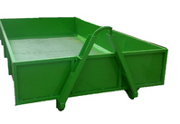
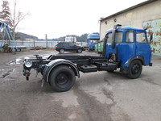
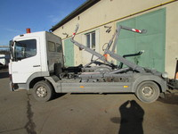
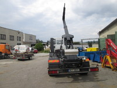
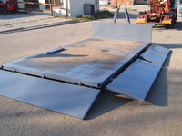
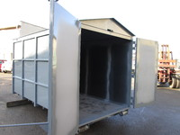
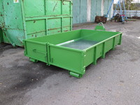
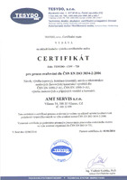
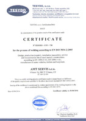
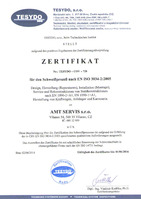

Kontejnerová technika, teleskopické nosiče a komplexní servis nákladních vozů
Vyrábíme certifikované abroll, suťové a velkoobjemové kontejnery na míru. Dodáváme a montujeme hydraulické kontejnerové nástavby do 12 tun a zajišťujeme opravy stavebních strojů.
Kontejnery všech rozměrů, barev a provedení
Vyrábíme kontejnery se sklopnými bočnicemi, suťové kontejnery i velkoobjemové nástavby se síťovými bočnicemi. Precizní sváry dle ČSN EN ISO 9606-1 a vysoce odolné antikorozní nátěry.
- Kontejnery pro vozy Avia (3,80 × 2,05 × 0,50 m) skladem
- Abroll kontejnery dle normy DIN 30722 pro těžké podvozky
- Barevné provedení dle libovolného odstínu vzorníku RAL

Autorizovaná výroba a montáž nosičů do 12 t
Dodáváme teleskopické kontejnerové nástavby do 8 tun pro kontejnery od 3 300 do 5 000 mm a jednoramenné hákové nástavby 5 tun pro nákladní automobily všech kategorií.
- Montáž na podvozky Avia, Mercedes-Benz Atego, MAN, DAF
- Kompletní homologace a oficiální zápis do technického průkazu
- Pneumatické ovládání z kabiny i nouzové vnější ovládání

Generální opravy rypadel, nakladačů a nákladních aut
Zajišťujeme odborné mechanické i hydraulické opravy stavební techniky značek Locust, UNC, Bobcat, CAT, LIAZ, Tatra, Multicar a dalších. Dodáváme nové i repasované díly.
- Kompletní repase hydraulických válců a pístnic
- Diagnostika motorů, převodovek a brzdových soustav
- Dílenské zázemí Rantířov u Jihlavy s mostovými jeřáby

Nákladní pneuservis a kompletní vyřízení STK / ME
Přezouváme a opravujeme pneumatiky pro nákladní vozy, stavební stroje a traktory od 17,5" do 26". Připravíme vozidlo na technickou kontrolu a zajistíme kompletní STK a ME.
- Vulkanizační opravy průrazů plášťů nákladních vozidel
- Kontrola brzdových soustav a seřízení geometrie před STK
- Rychlé termíny pro firemní flotily v areálu Vílanec

Čtyři specializované oborové divize
Kontejnerová technika
Zámečnická a svařovací výroba kontejnerů na zakázku. Vanové kontejnery Mulde dle DIN 30720, velkoobjemové kontejnery i suťové vany se zesíleným dnem.
Kontejnerové nástavby
Konstrukce, montáž a hydraulické zapojení teleskopických nosičů do 8 tun a hákových ramen do 5 tun pro užitkové a nákladní vozy do 12 tun.
Opravy stavebních strojů
Specializovaný servis rypadel, smykem řízených nakladačů (Locust, UNC), autojeřábů a sklápěčů včetně dodávek originálních náhradních dílů.
Inspekce & Pneuservis
Nákladní přezouvací linka, vyvažování těžkých kol, diagnostika emisí a kompletní příprava na státní technickou kontrolu.
Sortiment a technické parametry
Kliknutím na detail položky zobrazíte úplnou specifikaci, rozměrové řady a certifikace.

DIN 30722 & DIN 30720Výroba velkoobjemových a vanových kontejnerů
Zakázková výroba kontejnerů všech rozměrů a provedení – abroll kontejnery pro těžká nákladní vozidla, vanové kontejnery Mulde, suťové kontejnery se sklopnými bočnicemi.
Kontejnerové teleskopické a hákové nosiče do 12 t
Autorizovaná výroba, montáž a servis jednoramenných a teleskopických kontejnerových nosičů pro nákladní automobily do celkové nosnosti 12 tun.

Diagnostika & OpravyServis stavebních strojů a nákladních automobilů
Kompletní mechanické, hydraulické a elektrikářské opravy stavebních strojů, rypadel, nakladačů i nákladních vozidel všech tuzemských i světových značek.

Pneuservis & STK/MENákladní pneuservis a příprava na STK a emise
Profesionální přezouvání a opravy nákladních a stavebních pneumatik, diagnostika emisí a kompletní příprava vozidel včetně zajištění STK a ME.
Certifikáty a výrobní oprávnění



Konzultace zakázky a servis techniky
Navštivte náš prodejní areál ve Vílanci na tahu Praha–Jihlava–Vídeň nebo servisní dílny v Rantířově.
Sídlo & Prodejní areál
AMT SERVIS s.r.o.
č.p. 54, 588 35 Vílanec (okres Jihlava)
trasa Praha – Jihlava – Wien
Telefon: +420 734 744 941, +420 777 704 136
Servisní dílny & Kancelář
Rantířov 20, 588 41 Vyskytná nad Jihlavou
Telefon: +420 737 958 669, +420 777 704 138
E-mail: amtservis@centrum.cz
Statutární vedení & IČO
Jednatel: František Zelený
IČO: 00532959 | DIČ: CZ00532959 | Datová schránka: 8nmmdbe
Poptávkový formulář techniky
Zašlete nám poptávku na výrobu kontejnerů, montáž nosiče nebo servis. Ozveme se vám obratem.